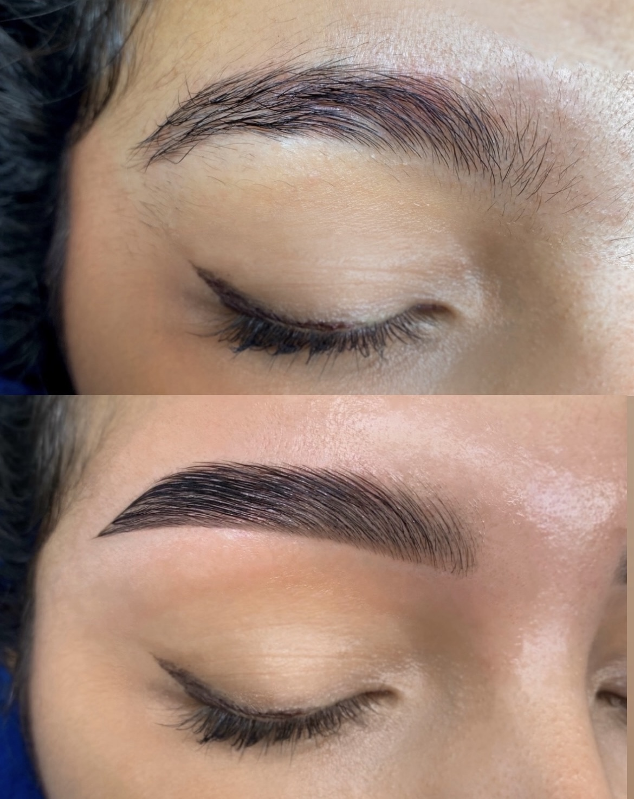

Le Brow Lift consiste à discipliner et redessiner les sourcils en repositionnant les poils vers le haut afin de créer un effet liftant naturel. Cette technique met en valeur le regard et donne un effet soigné pendant plusieurs semaines.
Comment ça fonctionne ?
Les poils sont travaillés à l’aide de lotions spécifiques qui assouplissent et restructurent la fibre du sourcil. Ils sont ensuite fixés dans une nouvelle forme, plus élégante et plus liftée.
Quels sont les avantages ?
- Regard plus ouvert et plus lumineux.
- Sourcils parfaitement disciplinés.
- Effet naturel sans maquillage.
- Résultat visible pendant 4 à 6 semaines.
Conseils & précautions
- Éviter l’eau et la vapeur pendant 24h après la séance.
- Ne pas frotter les sourcils.
- Hydrater les poils avec une huile adaptée.
FAQ - Questions fréquentes
- Est-ce douloureux ? Un léger inconfort est possible, mais la zone est préparée et la séance reste très supportable.
- Combien de temps dure l’effet ? En général, 4 à 6 semaines selon votre entretien et votre type de poils.
- Peut-on corriger le résultat ? Oui, de petites retouches sont possibles si nécessaire après cicatrisation.
- Qui peut bénéficier du Brow Lift ? Toutes les personnes souhaitant un regard plus ouvert et harmonieux sans maquillage permanent.
